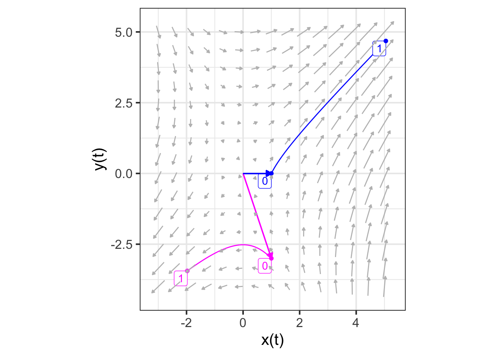

45 Eigenvalues, eigenvectors
In the previous chapters, you’ve seen how linear dynamics, when unstable, lead trajectories off to infinity. Chapter Chapter 43 looked at some ways that nonlinearity can tame instability, as in the simple models of linear growth.
In this chapter, we return to linear dynamics to develop a quantitative theory of stability. Such theory is important in many engineering and design applications. For instance, a building exposed to earthquake risk can be economically designed to be strong specifically against the type of shaking produced by earthquakes. An electronic circuit can be designed to be sensitive to certain kinds of communication signals while still resisting noise or jamming.
Cruise control is a feature of many modern automobiles. It enables a driver to set a desired speed for the car to follow automatically, thus reducing cognitive load on the driver. Early models of cruise control introduced in the 1970s (and still common in 2020) had an extremely simple logic. The speedometer constantly monitors the car’s speed \(v\). The driver sets a desired speed, which we will call \(v_0\). The cruise control actuator—the mechanism that works to maintain the speed at \(v_0\) by, let’s say, adjusting the throttle to increase or reduce speed as appropriate—is designed to produce a throttle input proportional to the deviation in actual speed \(v\) from the set speed \(v_0\).
\[\text{throttle-input} = -a (v - v_0)\ .\]
You can see that when \(v = v_0\), the throttle input from the system is zero. When \(v_0 < v\), as when starting to go downhill, the throttle input will be negative, reducing the speed.
A simple model is that the throttle input is proportional to \(\partial_t\, v\): positive input increases speed, negative input decreases speed. The overall system is then described by a linear, first-order differential equation \[\partial_t\,v = -a(v-v_0)\ .\] This equation has a fixed point at \(v = v_0\) (as desired). To describe more simply the dynamics around the fixed point, we can define a new dynamical state \(y=v - v_0\). Differentiating both sides with respect to time gives \(\partial_t y = \partial_t v\), so we can re-write the original differential equation as \[\partial_t y = -a y\] which has a solution \(y(t) = A e^{-at}\) as we’ve seen before. For any positive coefficient \(a\), the control system is stable: a deviation from \(v_0\) will be followed by exponential decay back to \(v_0\).
A modern cruise control system adds an important feature: the car slows down automatically if it gets too close to the car in front. Let’s call the distance to the leading car \(x\) and define “too close” to mean closer than distance \(x_0\). The car is traveling at velocity \(v\) and the car in front at \(v_f\). If \(v_f < v\), the distance between the cars gets smaller: \(\partial_t x = -(v - v_f)\). On the other hand, if \(x_0 < x\), the car is far enough away that the velocity can be increased: \(\partial_t v = b(x - x_0)\). We can unite these two first-order differential equations into a single, second-order equation:
\[\partial_t x = -(v - v_f) \ \ \implies\ \ \partial_{tt} x = - \partial_t v = - b(x-x_0)\]
To solve this system, define \(y \equiv x - x_0\). This implies \(\partial_{tt} y = \partial_{tt} x\), so the equation describing the control system becomes \[\partial_{tt} y = - b y\ .\] The solution to this is \(y(t) = A \sin\left(\sqrt{b} \ t\right)\) as you can confirm by substitution.
Result: The simple car-following control system oscillates. That is not a very good experience for the driver! By constructing a theory of stability, we may be able to figure out a re-design that will cause the oscillations to go away.
45.1 Vector solutions to linear differential equations
The form in which we have been writing linear differential equations in two state variables is \[\begin{eqnarray} \partial_t x & = a x + b y\\ \partial_t y & = c x + d y\ . \end{eqnarray}\]
A key part of constructing a theory of stability is finding a set of mathematical ideas that enable us to view dynamics in a simpler way. The idea we will introduce here is thinking about the state and trajectory of a differential equation in terms of vectors. We will work here with systems with a two-variable dynamical state, but the results apply just as well to higher dimensional states. That is important in applied work, where the systems being modeled are complicated with many state components.
We can re-write the linear differential equation using vector and matrix notation. Suppose that we collect the \(x\) and \(y\) components of the state into a vector, \[\vec{w(t)} =\left[\begin{array}{c}x(t)\\y(t)\end{array}\right]\ .\] The differential equation, in terms of \(\vec{w(t)}\) is
\[\partial_t \vec{w(t)} = \left[\begin{array}{cc}a&b\\c&d\end{array}\right] \vec{w(t)}\ .\]
Now imagine that we pick two non-colinear vectors, \(\vec{u_1}\) and \(\vec{u_2}\) that span the state space. Since the vectors are assumed to span the state, any initial condition can be written as a linear combination of those two vectors:
\[\vec{w(0)} =\left[\begin{array}{c}x(0)\\y(0)\end{array}\right] = m_1 \vec{u_1} + m_2 \vec{u_2}\ .\]
For the moment, we won’t worry about how best to choose \(\vec{u_1}\) and \(\vec{u_2}\); any two vectors that are not colinear will do.
\(\ \)
As a running example, we will work with the pair of first-order differential equations \[\begin{eqnarray} \partial_t x &= x + y\\ \partial_t y &= 2 x \ ,\\ \end{eqnarray}\] which, in vector/matrix form are
\[\partial_t \vec{w(t)} = \left[\begin{array}{cc}1&1\\2&0\end{array}\right] \vec{w(t)}\ .\]
Imagine that we choose, arbitrarily, \[\vec{u_1} = \color{magenta}{\left[\begin{array}{r}1\\-3\end{array}\right]}\ \ \ \text{and}\ \ \ \vec{u_2} = \color{blue}{\left[\begin{array}{r}1.0\\0\end{array}\right]}\ .\]
For the example, we will calculate a trajectory starting at the initial condition \(\vec{w(0)} = \left[\begin{array}{r}-1.1\\ 2.1\end{array}\right]\):
traj <- integrateODE(dx ~ x + y, dy ~ 2*x, x=-1.1, y=2.1, domain(t=0:2))
traj_plot(y(t) ~ x(t), traj)

The initial condition (marked “0” in Figure 45.1 is, like any other point in the state space, a linear combination of \(\vec{u_1}\) and \(\vec{u_2}\). We can find the scalar coefficients of the linear combination using any of the methods presented in Block 5, for instance the telescope method. We will illustrate with qr.solve():
M <- cbind(rbind(1,-3), rbind(1,0))
w0 <- rbind(-1.1, 2.1)
qr.solve(M, w0)
## [,1]
## [1,] -0.7
## [2,] -0.4So, \(\vec{w(0)} = -0.7 \vec{u_1} - 0.4 \vec{u_2}\). Keep these scalar coefficients, \(-0.7\) and \(-0.4\) in mind for the next example.
We can use integrateODE() to find the solution starting at any initial condition. In particular, we can find the solution \(\vec{u_1}\) as the initial condition and, similarly, using \(\vec{u_2}\) as the initial condition.
traj_u1 <- integrateODE(dx ~ x + y, dy ~ 2*x, x=1, y=-3, domain(t=0:2))
traj_u2 <- integrateODE(dx ~ x + y, dy ~ 2*x, x=1, y= 0, domain(t=0:2))Figure 45.2 shows these trajectories.

At first glance, the two trajectories \(\vec{u_1(t)}\) and \(\vec{u_2(t)}\) in Figure 45.2 that start from \(\vec{u_1}\) and \(\vec{u_2}\) might not look much like the trajectory in Figure 45.1 that starts from \(\vec{w(0)} = -0.7 \vec{u_1} - 0.4 \vec{u_2}\). But in fact there is a very simple relationship between the trajectories:
\[\vec{w(t)} = -0.7 \vec{u_1(t)} - 0.4 \vec{u_2(t)}\ .\]
To state the situation more generally, any solution to the differential equations can be written as a linear combination of the solutions starting at \(\vec{u_1}\) and \(\vec{u_2}\), regardless of how \(\vec{u_1}\) and \(\vec{u_2}\) were chosen.
We can see this algebraically. Since \(\vec{u_1(t)}\) and \(\vec{u_2(t)}\) are solutions to the linear differential equation, it must be that
\[\partial_t \vec{u_1(t)} = \left[\begin{array}{cc}1&1\\2&0\end{array}\right] \vec{u_1(t)}\ \ \text{and}\ \ \partial_t \vec{u_2(t)} = \left[\begin{array}{cc}1&1\\2&0\end{array}\right] \vec{u_2(t)}\ .\]
Taking a linear combination of these equations gives
\[\partial_t \left[m_1\, \vec{u_1(t)} + m_2 \vec{u_2(t)}\right] = \left[\begin{array}{cc}1&1\\2&0\end{array}\right] \left[m_1\, \vec{u_1(t)} + m_2 \vec{u_2(t)}\right]\]
The same will be true in general, that is, for the matrix \(\left[\begin{array}{cc}a&b\\c&d\end{array}\right]\).
45.2 Eigenvectors and eigenvalues
In the previous section, we saw that the solution to any linear differential equation starting at any initial condition can be written as a linear combination \(m_1 \vec{u_1(t)} + m_2 \vec{u_2(t)}\), where \(\vec{u_1(t)}\) is the solution starting at an initial condition \(\vec{u_1}\) and \(\vec{u_2(t)}\) is the solution starting at \(\vec{u_2}\). It does not matter how \(\vec{u_1}\) and \(\vec{u_2}\) are chosen, so long as they are not colinear, that is, so long as they span the state space.
In this section, we will demonstrate that there is a particular way of selecting \(\vec{u_1}\) and \(\vec{u_2}\) that makes the solutions \(\vec{u_1(t)}\) and \(\vec{u_2(t)}\) have a very simple, purely exponential format. The vectors to be chosen are the eigenvectors of the matrix \(\left[\begin{array}{cc}a&b\\c&d\end{array}\right]\). We will call these eigenvectors \(\vec{\Lambda_1}\) and \(\vec{\Lambda_2}\). (This use of the Greek letter \(\Lambda\) (capital “lambda”) and it is lower-case version \(\lambda\), is conventional in mathematics, physics, and engineering. So it is worth learning to identify the letters.)
Our task in this section is to show how to compute the eigenvectors \(\vec{\Lambda_1}\) and \(\vec{\Lambda_2}\) and that the solutions \(\vec{\Lambda_1(t)}\) and \(\vec{\Lambda_2(t)}\) are in fact simple exponentials. In Chapter Chapter 46 we will derive the formula for the eigenvectors. Here, we will use the R function eigen() to do the calculations for us.
\(\ \) Eigenvectors can be calculated using the R function eigen() applied to the abcd matrix that defines the linear differential equation.
For the system of first-order differential equations \[\partial_t x = x + y\\\partial_t y = 2x\ \ \ \ \ \] the matrix is, as we’ve seen, \[\left[\begin{array}{cc}1&1\\2&0\end{array}\right]\ .\]
Carrying out the eigenvector calculation is straightforward:
M <- cbind(rbind(1,2), rbind(1,0))
eigen(M)
## eigen() decomposition
## $values
## [1] 2 -1
##
## $vectors
## [,1] [,2]
## [1,] 0.7071068 -0.4472136
## [2,] 0.7071068 0.8944272The eigenvectors are the two columns of the matrix labeled vectors returned by the calculation. Here, that is
\[\vec{\Lambda_1} = \left[\begin{array}{r}0.7071\\0.7071\end{array}\right] \ \ \ \text{and}\ \ \ \ \vec{\Lambda_2} = \left[\begin{array}{r}-0.4472\\0.8944\end{array}\right]\ .\]
The calculation also produces eigenvalues. Here that is \(\lambda_1 = 2\) and \(\lambda_2 = -1\).
We can see what’s special about \(\vec{\Lambda_1}\) and \(\vec{\Lambda_2}\) by plotting them along with the flow field, as in Figure 45.3.
The eigenvectors mark the directions where the flow is either directly toward the fixed point or directly away from it. Here, the flow on the subspace of \(\color{magenta}{\vec{\Lambda_1}}\) is away from the fixed point, while the flow along the subspace of \(\color{blue}{\vec{\Lambda_2}}\) is inward to the fixed point.
The consequence of this alignment of the flow with the eigenvectors is that the trajectory from any initial condition \(m_1 \vec{\Lambda_1}\) will have the form \(m_1(t) \vec{\Lambda_1}\) and similarly for an initial condition \(m_2(t) \vec{\Lambda_2}\).
As we did in the previous section, let’s calculate the trajectories \(\color{magenta}{\vec{\Lambda_1(t)}}\) and \(\color{blue}{\vec{\Lambda_2(t)}}\) starting at the two eigenvectors and plot out the \(y(t)\) component of the solution. Since we are anticipating an exponential form for the function, we will use semi-log axes, where an exponential will look like a straight line.
traj_eigen1 <- integrateODE(dx ~ x + y, dy ~ 2*x,
bounds(t=0:1),
x=0.7071, y=0.7071)
## Solution containing functions x(t), y(t).
traj_eigen2 <- integrateODE(dx ~ x + y, dy ~ 2*x,
bounds(t=0:1),
x=-0.4472, y=0.8944)
## Solution containing functions x(t), y(t).
traj_plot(y(t) ~ t, traj_eigen1, color="magenta") %>%
traj_plot(y(t) ~ t, traj_eigen2, color="blue") %>%
gf_refine(scale_y_log10(
breaks=c(0.3290, 0.7071, 0.8944, 5.2248)))
We have marked the \(y\) axis with the starting and ending values of each function, so that you can find the exponential parameter \(k\) for each function.
\(\color{magenta}{y_1(t) = 0.7071 e^{k_1 t}}\)
\(\color{blue}{y_2(t)} = 0.8944 e^{k_2 t}\).
To find \(k_1\) and \(k_2\), plug in \(t=1\) to the solution:
\(\color{magenta}{y_1(1) = 5.2248 = 0.7071 e^{k_1}} \implies k_1=2\)
\(\color{blue}{y_2(1) = 0.3290 = 0.8944 e^{k_2}} \implies k_2 = -1\)
Look back at the results from the eigen(M) calculation. These values for \(k_1\) and \(k_2\) are exactly the eigenvalues that were computed from the matrix M. In standard notation, rather than \(k_1\) and \(k_2\), the notation \(\lambda_1 = k_1\) and \(\lambda_2 = k_2\) is preferred. (Remember, \(\lambda\) is the Greek letter “lambda” in it is lower-case form.) Every solution to the differential equation has the form
\[m_1\, e^{\lambda_1 t} \vec{\Lambda_1} + m_2\, e^{\lambda_2 t} \vec{\Lambda_2}\ .\]
The scalar coefficients \(m_1\) and \(m_2\) can be found from the initial condition. The stability of the system depends only on \(\lambda_1\) and \(\lambda_2\). If either one of these is positive, then the system is unstable.
45.3 Exercises
Exercise 45.01
Using an angle from -90 to 90 degrees to specify directions, say in what directions each of the eigenvectors is pointed. (Your answer should be good to \(\pm 10 \text{deg}\). Remember, 0 degrees is horizontal.)


Exercise 45.02
The exercise is based on the interactive applet shown below. Click on the image to open up the applet in another tab of your browser. Then arrange so that the applet’s tab is side by side with this one. That way you can see the questions and figure out the answer at the same time.

We will look at trajectories that go round and round: oscillating solutions to the linear dynamics around a fixed point.
In the applet, click on the left-hand graph to set the \(a\) and \(b\) values in the [ab10] matrix. Clicking on the right-hand graph will start a trajectory (shown in red) from the place where you click.
You can create an oscillatory flow by clicking anywhere in the blue parabolic region in the left-hand graph. Play around with clicking in different spots in the parabolic region. Set the number of time steps for the red trajectory until you can see at least two full revolutions around the origin.
Part A Click near (but not on) the fixed point. Which of these best describes the shape of the trajectory?
- A tightly wound spiral
- A loosely wound spiral
- A rectangular shape
- Alternating between heading toward the fixed point and heading away from it.
Part B Leaving the a and b values the same as when you answered the previous question, start the trajectory about half-way from the fixed point. How does the new trajectory compare to the one from the previous problem?
- A more tightly wound spiral
- A more loosely wound spiral
- A spiral that goes the other way round
- A rectangular shape
Part C Find some \(a\) and \(b\) that causes the trajectory to go round in a closed loop. (You might not be able to get it to close it exactly, but try the best you can.) Vary \(a\) leaving \(b\) alone, and vice versa, so you can see how the existence of the closed loop depends on \(a\) and \(b\). Which of these best describes the requirement for a closed loop?
- b is close to zero
- a is close to zero
- both a and b are close to zero
- a is bigger than b
Part D Drawing on your experience from the previous question in vary ing \(a\) and \(b\), which of these best describes the requirement for a trajectory that spirals out from the origin?
\(a < 0\) \(0 < a\) \(b < 0\) \(0 < b\)
Part E Drawing on your experience from the previous question in varying \(a\) and \(b\), which of these best describes the requirement for a trajectory that spirals in toward the origin?
\(a < 0\) \(0 < a\) \(b < 0\) \(0 < b\)
Part F Now you should be pretty good at navigating the a-b space to make differently-shaped round-and-round trajectories. Focus for the moment on whether the spirals head in to the fixed point (stable) or away from it (unstable). What is the relationship between the eigenvalues and whether the trajectory is stable or not?
- real part is negative for stable flow
- real part is positive for stable flow
- imaginary part is negative for stable flow
- imaginary part is positive for stable flow
Part G Explore close to the edges of the parabolic zone in a-b space. What happens to the trajectories compared to when a-b is in the middle of the parabolic zone?
- the speed of rotation slows down
- the speed of rotation is unchanged
- the speed of rotation increases
Part H Look at the eigenvalues when you move around the a-b space. What aspect of the eigenvalues corresponds to the speed of revolution?
- the magnitude of the imaginary part
- the magnitude of the real part
- whether the imaginary part is positive or negative
- whether the real part is positive or negative.
Exercise 45.03
Part A What are the numerical values of the eigenvalues of the matrix \(\left[\begin{array}{rc}-1 & \frac{3}{4} \\ 1 & 0\end{array}\right]\)?
- \(\frac{1}{2}\) and \(-\frac{3}{2}\)
- \(\frac{1}{2}\) and \(-\frac{5}{2}\)
- \(\frac{1}{2}\) and \(+\frac{5}{2}\)
- \(-\frac{1}{2}\) and \(-\frac{5}{2}\)
Part B What are the numerical values of the eigenvalues of the matrix \(\left[\begin{array}{rc}0 & \frac{1}{2} \\ 1 & 0\end{array}\right]\)?
\(\pm\sqrt{2}/2\) \(\pm\sqrt{2}\) \(\pm 2\) \(\pm\frac{1}{2}\)
Exercise 45.04
We will work with the linear dynamical system
\[\begin{eqnarray} \partial_t x & = -x\\ \partial_t y & = -11 x - 2 y\ .\\ \end{eqnarray}\]
Using integrateODE() find the solution \(x(t)\) for \(0 \leq t \leq 10\) for each of these three initial conditions:
Trajectory 1) \(x_0=1, y_0=-1\)
Trajectory 2) \(x_0=0, y_0=1\)
Trajectory 3) \(x_0=1, y_0=0\)
T1 <- integrateODE( ...., x=1, y=-1, bounds(t=0:10))
T2 <- integrateODE( ...., x=0, y=1, bounds(t=0:10))
T3 <- integrateODE( ...., x=1, y=0, bounds(t=0:10))The three solutions will be the functions T1$x(), T2$x(), and T3$x().
Since the dynamics are linear, there will be a simple relationship between the three solutions, just as there is a simple relationship between three vectors in a 2-dimensional vector space.
Find this simple relationship and make a graph that demonstrate it.
Exercise 45.05
The only fixed point of the rabbit-fox system is \(\left(r^\star, f^\star\right) = \left(\frac{\alpha}{\beta}, -\frac{\delta}{\gamma}\right)\)
The linearized dynamics around this fixed point are: $$_t r =
(+ ) [r - r^] + \ _t f = - + (+ ) [f - f^]$$
Using the formula for eigenvalues, calculate the eigenvalues symbolically and report on the stability of the fixed point.
Exercise 45.06
In this exercise, you will be using an app that allows you to set \(a\) and \(b\) in the [ab10] matrix and hunt for eigenvectors.
Open up the app in another browser tab and arrange it side-by-side with this document, so you can see both at the same time.
You used a somewhat similar app when exploring linear, two-dimensional finite-difference equations. Here’s a link, but you don’t need to open that app for this exercise.
This new app does a few things differently:
- In the old app, you had four number-entry boxes to set the values of the [abcd] matrix. Here, because we are using the [ab10] format, you need only set \(a\) and \(b\). You can do this by clicking within the left-hand graph.
- The a-b selector graph is annotated with the type of generic behavior that the differential-equation system will show for any combination of \(a\) and \(b\). This allows you to reason backward from the behavior you are interested in to the corresponding values of \(a\) and \(b\). Since the type of behavior is encoded in the eigenvalues, you are effectively inverting the eigenvalue formula to find \(a\) and \(b\).
- The flow field (right-hand graph) shows stream-lines of continuous-time motion. Imagine you had a bunch of glitter which you cast out over a pool of water with a given flow pattern. If you took a time-exposure photo, you would see each piece of glitter as it moved along with the water in which it is embedded.
- You can click in the flow field to start a trajectory at that point. You can control the time domain—that is, how long is the time exposure of the photo—with the radio buttons at the bottom.
- There is a thin, green line annotating the flow field. This line runs from the fixed point (right in the center) in the direction of the point on which you click to start a trajectory. A vector with the same orientation as the green line is given numerically below the graph. This orientation is also described using an angle measurement in degrees.
- There is no display of the solution, that is, \(x()\) versus \(t\). This is because we want you to understand the geometry of the flow.
First, play around with the app. Choose miscellaneous values of \(a\) and \(b\), observe the flow, and click in the flow field to draw a red trajectory. Notice what happens when you make the number of steps larger or smaller. In unstable directions, you can get a good view of the trajectory by starting it near the fixed point. If you start it at the periphery of the graph, most of the trajectory will be outside the display. And if the number of steps is very small, you may not see it at all because the glyph is so thin near the start.
When coming from a stable direction, click near the periphery of the graph to get a good view, since the red trajectory will naturally be heading in towards the origin. When estimating the orientation of an eigenvector, try to get the green line heading straight down the middle of the red trajectory. This often requires a bit of fiddling, moving the starting point just a tiny amount to find one that is just right.
When you are on an eigenvector, the trajectory will be dead straight on the green line. Any trajectory not starting on an eigenvector will be curved to a greater or lesser extent, depending on the relative sizes of the eigenvalues.
In the following questions, pick the choice closest to the answer you found. The exact choice of \(a\) and \(b\) stemming from a click depends somewhat on the graphics resolution of your display, so you should expect only to be able to get close to the \(a\) and \(b\) values given in the question.
Part A Set \(a=-1.0\) and \(b = 0.5\) (or as close as you can get) and observe the flow. This is a saddle: stable in one direction, unstable in another. There will be one stable eigenvector, where the flow moves directly outward from the origin, and one unstable eigenvector, where the flow moves directly inward toward the origin. Which one of these is the orientation (in degrees) of the unstable eigenvector?
-149.7 -63.6 -31.7 69.1 73.5 106.6 143.7 149
Part B Which of these best describes the eigenvalue corresponding to the unstable eigenvector?
- Negative and real
- Zero and real
- Positive and real
- Complex with a negative real part
- Complex with a positive real part
Part C Keeping \(a=-1.0\) and \(b = 0.5\), hunt for the stable eigenvector. Which one of these is the orientation (in degrees) of the stable eigenvector?
-149.7 -63.6 -31.7 69.1 73.5 106.6 143.7 149
Part D Set \(a=2\) and \(b = -0.5\) and observe the flow. This is a source: all initial conditions lead to motion away from the fixed point. But for this \(a\) and \(b\), some directions are “faster” than others. Which one of these is the orientation (in degrees) of the fast eigenvector?
-149.7 -63.6 -31.7 69.1 73.5 106.6 143.7 149
Part E Keeping \(a=2\) and \(b = -0.5\), what is the orientation of the slow eigenvector?
-149.7 -63.6 -31.7 69.1 73.5 106.6 143.7 149
Part F Staying with the flow from \(a=2\) and \(b = -0.5\), which of these best describes the pair of eigenvalues?
- Both are real and positive
- Both are real and negative
- One is complex, the other real
- Both are complex, one has negative real part
Part G Set \(a=-2\) and \(b = -0.5\) and observe the flow. This is a sink: all initial conditions lead to motion toward the fixed point. Which one of these is the orientation (in degrees) of the fast eigenvector?
-149.7 -63.6 -31.7 69.1 73.5 106.6 143.7 149
Part H Keeping \(a=-2\) and \(b = -0.5\), what is the orientation of the slow eigenvector?
-149.7 -63.6 -31.7 69.1 73.5 106.6 143.7 149
Part I Staying with the flow from \(a=2\) and \(b = -0.5\), which of these best describes the pair of eigenvalues?
- Both are real and positive
- Both are real and negative
- One is complex, the other real
- Both are complex, one has negative real part
- Both are complex, both have negative real part
Part J Set \(a=-1\) and \(b = -1\) and observe the flow. This is a node: the flow is spiral with the fixed point at the center. Is the flow stable or unstable?
- stable
- unstable
- neither stable nor unstable
Part K Keeping \(a=-1\) and \(b = -1\), what can you correctly say about the eigenvectors?
- They have almost the same orientation
- There is only one eigenvector
- There are no eigenvectors
Part L Staying with the flow from \(a=2\) and \(b = -0.5\), which of these best describes the pair of eigenvalues?
- Both are real and positive
- Both are real and negative
- One is complex, the other real
- Both are complex, one has negative real part
- Both are complex, both have negative real part
Part M Set \(a=0\) and some \(b < 0\). The result will be a trajectory that goes around in a closed loop. (You will want to make the number of steps large to see a complete loop.) You may not be able to click on exactly \(a=0\), but you should be able to get close enough that the trajectory is a very tightly wound spiral. We are interested here in how many cycles the trajectory covers in a fixed number of time steps, that is, whether the trajectory moves quickly or slowly around the loop. Which of these statements is true about the relationship between \(b\) and the speed of the motion?
- There is no relationship between \(b\) and speed of oscillation.
- When \(b\) is closer to zero, the speed is higher.
- When \(b\) is further from zero, the speed is higher.
Part N we will look at the relationship between the eigenvalues and the speed of oscillation. Keep \(a=0\) and \(b < 0\), which guarantees that the motion will be circular. Vary \(b\), each time observing how many loops the trajectory makes (for a fixed number of steps), and what the eigenvalues are. Which of these statements is not true about the speed of oscillation and the eigenvalues.
- The larger the magnitude of the imaginary part of the eigenvalues, the faster the oscillation.
- The two eigenvalues have the same imaginary part, except one is positive and the other negative.
- The speed of oscillation relates to the difference between the imaginary part of the eigenvalues.
- The real part of the eigenvalues is the same for both when there is oscillatory motion.